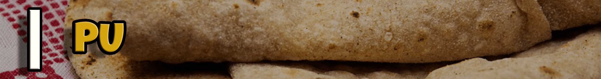
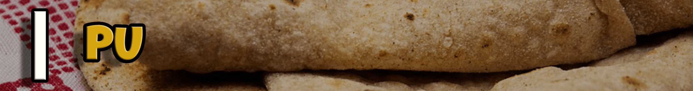
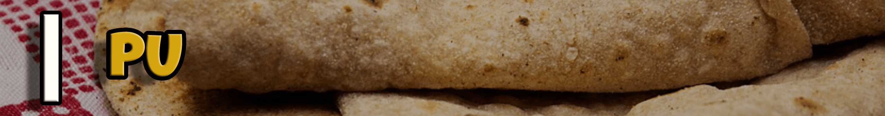
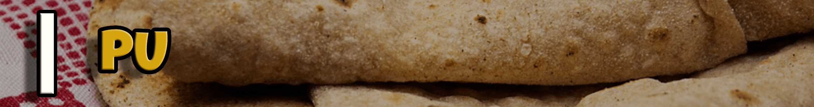

2 cups Wheat flour,1 cup Maida / All purpose flour,11/4 cups Water,Salt to taste,3 tsp Oil.
1 Cup chana Dal,1 cup Jaggery / Gudh,1/2 tsp Nutmeg powder.
1. Firstly, in a large bowl soak 1½ cup chana dal for 1 hour.
2. Drain off the water and transfer it to the cooker.
3. Add ¼ tsp turmeric, ½ tsp ghee, 3 cup water.
4. Pressure cook for 3 whistles on medium flame.
5. Now drain off the water separating dal and water.
6. Transfer the dal to a large kadai.
7. Add 1½ cup jaggery and mix well.
8. Once the jaggery melts, start to mash the dal.
9. Mash until the dal turns smooth paste. you can alternatively, grind the dal and jaggery into the mixi jar.
10. Keep cooking until the mixture thickens and hold the shape.
11. Now add 1 tsp ghee and ½ tsp cardamom powder and cook for a minute, or until the mixture starts to separate the pan. if the mixture is undercooked, then the stuffing will be sticky and will be difficult to make a ball.
12. Transfer to the plate and cool slightly. make sure not to overcook, else the stuffing turns hard.
13. Grease hands with ghee and makes ball-sized stuffing.
14. Finally, puran is ready. keep aside.
1. Firstly, in a large bowl take 2 cup wheat flour, 1 cup maida, ¼ tsp turmeric, ¼ tsp salt and 2 tbsp oil.
2. Mix well making sure all the ingredients are well combined.
3. Now add water as required and start to knead the dough.
4. Knead to a smooth and soft dough adding water in batches.
5. Grease the dough with 2 tsp oil, cover and rest for at least 1 hour.
6. After 1 hour, punch and knead the dough again.
7. Pinch a ball sized dough and make a smooth ball.
8. Form a cup by pressing the dough from the sides.
9. Place a ball sized prepared puran (dal stuff).
10. Start to stuff inside by pulling the dough without having any pleats.
11. Now seal the dough without any cracks.
12. Dust the ball with maida and flatten slightly.
13. Now roll the holige gently, without putting much pressure.
14. Roll as thin as possible and making sure the puran is distributed uniformly.
15. Now cook the puran poli on hot tawa keeping the flame on medium.
16. Flip over once the base is half cooked.
17. Spread the ghee on both sides and cook well.
18. Puff the puran poli, making sure to cook uniformly
19. Finally, enjoy puran poli with ghee or milk.